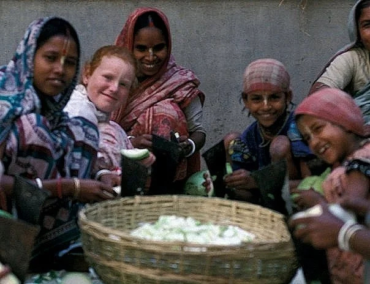
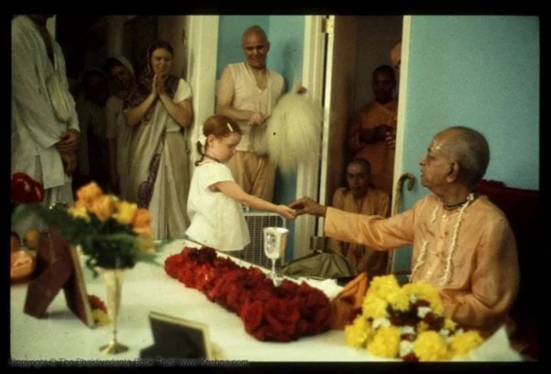

About Vilas
"My deepest belief is that no matter what happens to you, healing is possible — and through that healing, we can help others by offering compassion, connection, and love."
Vilas was born on June 19, 1969, in Culver City, California, into ISKCON (International Society for Krishna Consciousness) also known as the Hare Krishnas, an Eastern philosophy cult her young hippie parents had joined. Vilas's childhood stretched across the globe, but her most formative—and haunting—years were spent in the Dallas Gurukula and India. Life there was a mix of wonder and trauma, much of it in boarding schools that felt more like orphanages.
At thirteen, after surviving a brutal rape, her parents married her off. When that marriage ended, Vilas wandered India until returning to the U.S. at sixteen. At eighteen, she had a daughter and married her father. He left when she was a year and a half. At twenty-two, Vilas married again and had two sons. That marriage, too, was marked by abuse, and at thirty-two, she found the courage to leave.
Vilas began a relationship with a woman—wrong person, right gender—while building a career in real estate and working to heal from her past. At forty-two, she left that relationship and began rebuilding her life on her own terms. In time, Vilas found the love of her life—her partner, best friend, and greatest supporter. Together, they have built a thriving business and a life rooted in gratitude, compassion, and generosity. Vilas's mantra is: If you can conceive it and believe it, you can achieve it. Her belief is that no matter what happens to you, you must heal yourself first, then help heal others through compassion, connection, and love.
That belief has fueled her advocacy. In October 2001, Vilas was interviewed for Glamour magazine in connection with the groundbreaking lawsuit filed by the children of the Hare Krishna cult (ISKCON) to seek justice for survivors of abuse. On October 11, 2024, the AHA Foundation published part of her story to raise awareness about the urgent need to end child marriage. Just ten days later, on October 21, Vilas testified before the D.C. Council in support of legislation to ban child marriage in the District. Less than two months later, on December 17, 2024, the Council voted unanimously to pass the bill, transforming years of pain, resilience, and advocacy into lasting change.
Vilas's journey has been one of survival, rebuilding, and using her voice to protect others from the harms she endured. She is living proof that no matter how deep the wound, healing is possible—and that healing can spark change far beyond yourself.